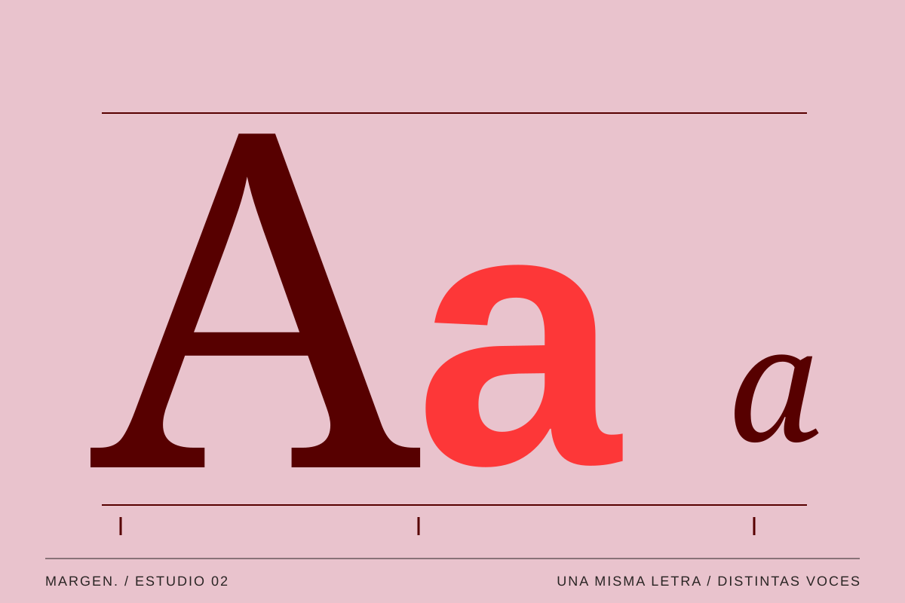
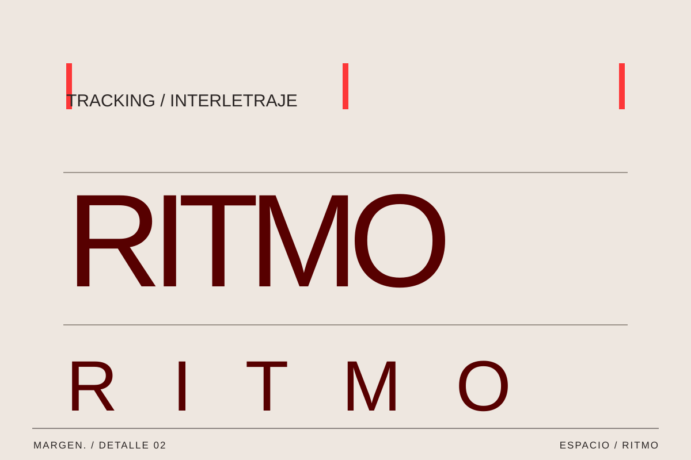

02 / Diseño / Vol. 001
Tipografías con carácter
Cómo una letra puede cambiar el tono de lo que leemos.
MARGEN. / Texto editorial ·

Antes de leer una palabra, ya hemos recibido parte de su mensaje. Su tamaño, su forma y el espacio que la rodea nos sugieren cómo suena.
La misma palabra, otra voz
Escribe «hola» en una letra redonda y después en una muy estrecha. Aunque la palabra sea idéntica, la impresión cambia. Una puede parecer más cercana y otra más seca o urgente. No son significados universales: también influyen el color, el contexto y nuestras referencias visuales.
Elegir una tipografía se parece a decidir con qué voz queremos contar algo. En una revista, esa voz ayuda a reconocer la publicación y a entender qué partes del contenido tienen más importancia. Un titular puede llamar la atención mientras los datos pequeños mantienen un tono más tranquilo.
También interviene la memoria visual. Asociamos ciertas formas con un periódico, un envase, una señal o una portada porque las hemos visto muchas veces en contextos parecidos. Esas asociaciones no son reglas fijas: pueden cambiar con la época, con el país e incluso con la combinación de colores. Por eso una fuente no cuenta toda la historia por sí sola. El tono nace de la relación entre tipografía, imagen, composición y palabras.

La tipografía también es una forma de hablar.
El espacio también habla
Dos textos escritos con la misma fuente pueden producir sensaciones muy distintas. Acercar las letras hace que el conjunto resulte más compacto; separarlas introduce aire. El interlineado modifica la relación entre las líneas y, con ella, el ritmo de lectura.
No basta con probar una palabra bonita. Conviene escribir un título largo, un párrafo y algunas letras con tilde. Así vemos cómo funciona la familia en situaciones reales, especialmente cuando el contenido cambia de una página a otra.
El espaciado es especialmente importante cuando la escala cambia. Una palabra grande puede admitir letras muy juntas, mientras que esa misma decisión aplicada a un texto largo puede dificultar la lectura. Además, el contraste entre trazos finos y gruesos se percibe de otra manera en papel y en pantalla. Una prueba sencilla consiste en imprimir una página y verla también en el móvil: si el texto solo funciona ampliado, quizá el problema no sea su tamaño, sino el ritmo que construye.

Elegir con un motivo
Una familia con varios pesos puede resolver gran parte de un proyecto. La diferencia entre un título y una etiqueta no tiene que depender de cambiar siempre de fuente. La escala, el contraste y la posición también construyen jerarquía.
La próxima vez que una letra te llame la atención, fíjate en lo que hace además de verse bien. ¿Te invita a leer despacio? ¿Hace que un mensaje parezca urgente? Encontrar esa relación es empezar a elegir con criterio.
En un proyecto editorial conviene definir unas pocas decisiones repetibles: cómo se ve un titular, qué tamaño utiliza una cita, dónde aparece la fecha y cómo se diferencia una nota del cuerpo principal. Estas pequeñas normas hacen que las páginas se reconozcan como parte de una misma publicación. Una vez que esa base funciona, se puede introducir una variación: una inicial grande, un título vertical o una composición tipográfica que dialogue de forma más directa con la imagen.
La legibilidad también tiene personalidad
Una tipografía puede ser expresiva sin exigir esfuerzo al lector. Su carácter está en la forma de las letras, pero también en la atención que prestamos a los acentos, a los números, a la longitud de las líneas y a los espacios en blanco. Esos detalles suelen pasar desapercibidos cuando están bien resueltos y se vuelven evidentes cuando algo falla.
Diseñar con letras implica escuchar el texto. Antes de elegir lo que parece más llamativo, merece la pena preguntarse qué necesita decir, cuánto tiempo queremos que alguien le dedique y en qué soporte va a encontrárselo.